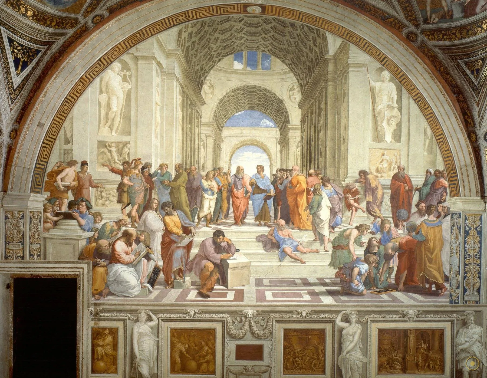
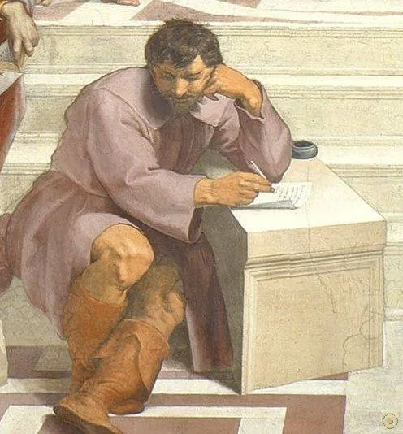
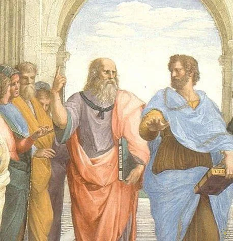
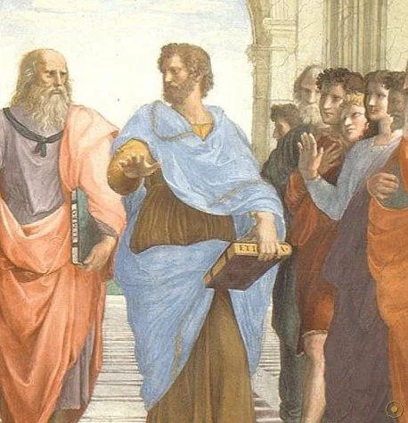
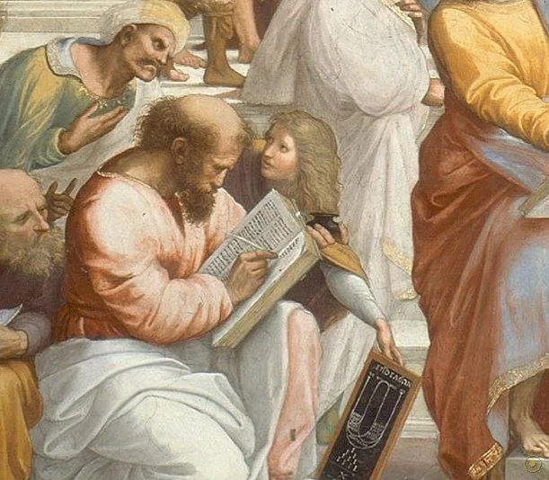
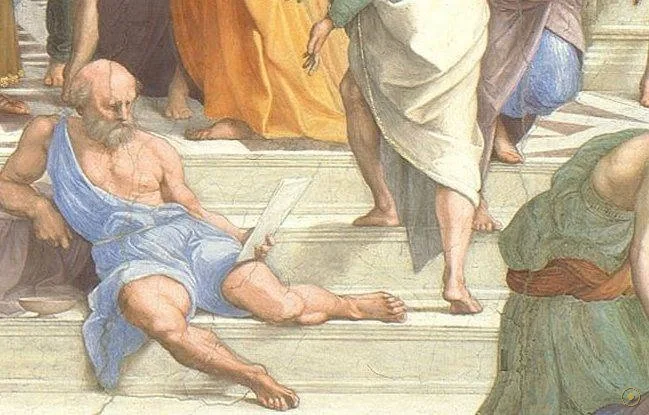
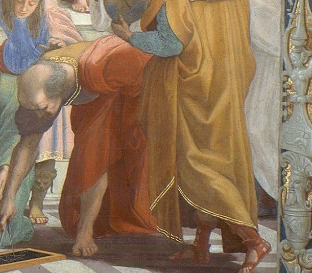
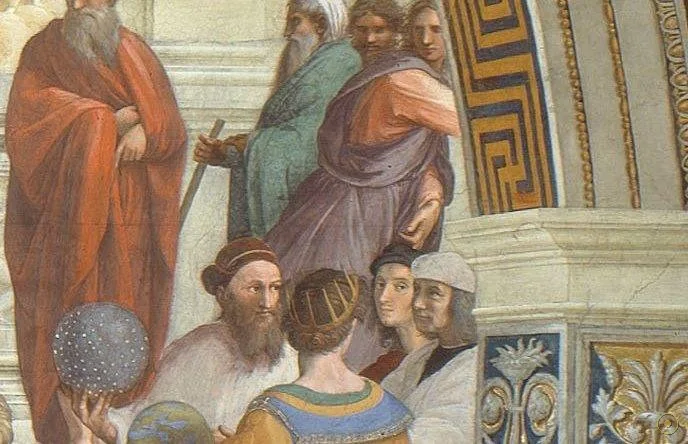
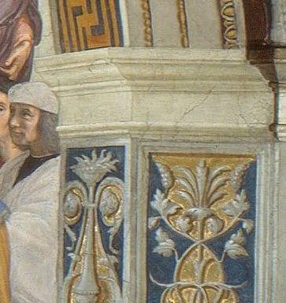

1509 年，26 岁的拉斐尔受教宗尤利乌斯二世之邀装饰梵蒂冈签字厅。这一面墙的主题是「哲学」——他不画任何具体事件，而是让古希腊的哲人们跨越数百年聚在同一座大厅里。画面正中央，两个手势说出了一切。
柏拉图一手指向天空——真理在永恒的理念世界里，眼前的万物不过是它的影子。
亚里士多德一手按向大地——真理就在眼前的一草一木、一事一物之中。
一个向天，一个向地。两千多年的西方哲学，被压缩进这两个手势之间。
—— 画面解读 · 通行说法
拉斐尔画下的，正是人类精神在「仰望」与「俯察」之间的那个瞬间。
拉斐尔没有留下任何人物名单。画中五十余位哲人的身份，全靠后世根据典籍与面容逐个「破译」——其中不少面孔，其实来自他的同时代人。

点击画面中的 ✦ 光点 认识每一位哲人 · 图片来源：Wikimedia Commons（公有领域）
这幅湿壁画与西斯廷穹顶几乎同时施工——文艺复兴盛期最耀眼的两个天才，在同一座宫殿里各自忙碌。
1508 · 罗马 梵蒂冈
经建筑师布拉曼特举荐，乌尔比诺青年拉斐尔奉召来到罗马。教宗尤利乌斯二世把签字厅四面墙交给他：这一面，画哲学。
➤1509–1511 · 签字厅
湿壁画要在灰泥未干时上色，颜料随墙面干燥永久结合，一天只能完成一天能画的部分，且几乎无法修改——每一笔都必须成竹在胸。
➤同期 · 西斯廷小堂
几十米外，米开朗基罗正独自仰头画西斯廷穹顶。据说拉斐尔看过进度后深受震动，随后把赫拉克利特（米开朗基罗的面容）加进了画面前景。

研究显示，前景倚石的赫拉克利特并非原构图的一部分，而是后来补画的。
他的体格、坐姿与面容，被广泛认为就是米开朗基罗——此刻后者正在同一座宫殿里画西斯廷穹顶，并且不许旁人观看。
传记记载，拉斐尔透过脚手架的缝隙偷看到了穹顶，随即在画中为对手留出一个位置：孤独、粗粝、与四周的热闹格格不入——像极了米开朗基罗本人。
两位大师一生几乎不交一言，却在同一座宫殿里各自留下杰作，又在同一面墙上「合作」了五百余年。
※ 「偷看西斯廷」多出自瓦萨里以降的传记传统，细节真伪难考；但赫拉克利特为补画人物、面容指认为米开朗基罗，是学界主流意见。
拉斐尔没有留下人物名单。五百年间，学者们根据典籍、姿态与「彩蛋」面容逐个指认——以下是最主流的版本。

红袍指天，手持《蒂迈欧篇》，面容借自达·芬奇。

蓝袍按地，手持《尼各马可伦理学》，全画正中。
后来补画的沉思者，倚石而坐，与热闹格格不入。

伏案书写音律与比例，少年为他捧着木板。

独卧台阶中央，对这座宏伟大厅报以冷眼。

圆规画几何，四名学生围观，伯乐被画成了几何学家。

背对观众的天文学家与先知，一个看地，一个看天。

黑帽少年直视观众，把自己悄悄编进群贤名录。
签字厅四面墙分别对应神学、哲学、诗歌与法学。《雅典学院》代表哲学，与对面的《圣礼之争》一虚一实、彼此呼应。
在未干的灰泥上作画，颜料随墙面干燥永久结合。不能修改、不能涂改堆叠，必须一次到位——它是勇气与规划的艺术。
单点透视与宏伟拱厅，是布鲁内莱斯基以来文艺复兴空间观念的集大成。观众的眼睛被精确引导到两位哲人中间。
1483 年生于乌尔比诺，1508 年入罗马，1520 年英年早逝，年仅 37 岁。这幅画让他与达·芬奇、米开朗基罗并称「文艺复兴三杰」。
签字厅落成，教宗尤利乌斯二世大为满意，随即把梵蒂冈更多的厅室交给拉斐尔——他成为罗马最炙手可热的画师。
画中人物的身份至今仍被反复讨论；它也成为最常被「挪用」与戏仿的艺术品之一，从教科书封面到广告与电影海报无处不在。
在梵蒂冈博物馆，参观者穿过一室室陈列，最终在签字厅与五十多位哲人相遇——包括角落里那位戴黑帽的 26 岁年轻人。